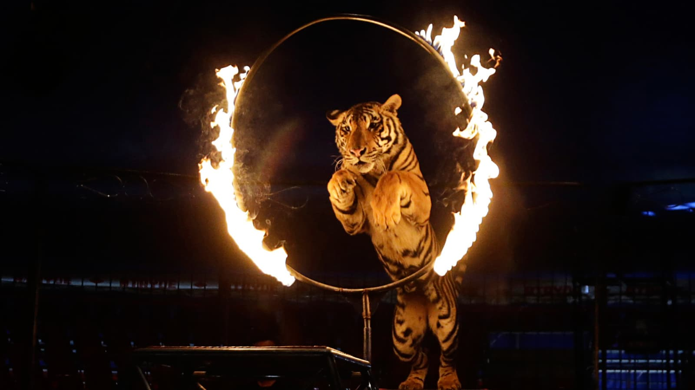
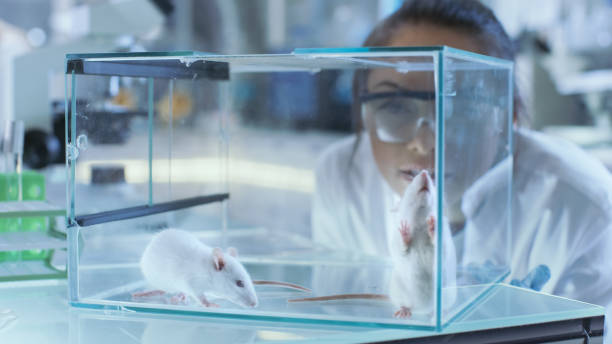
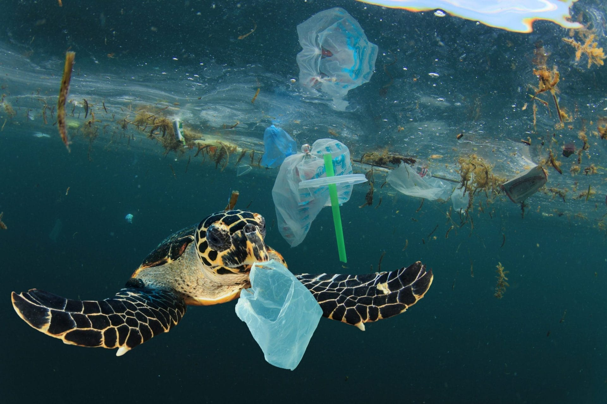
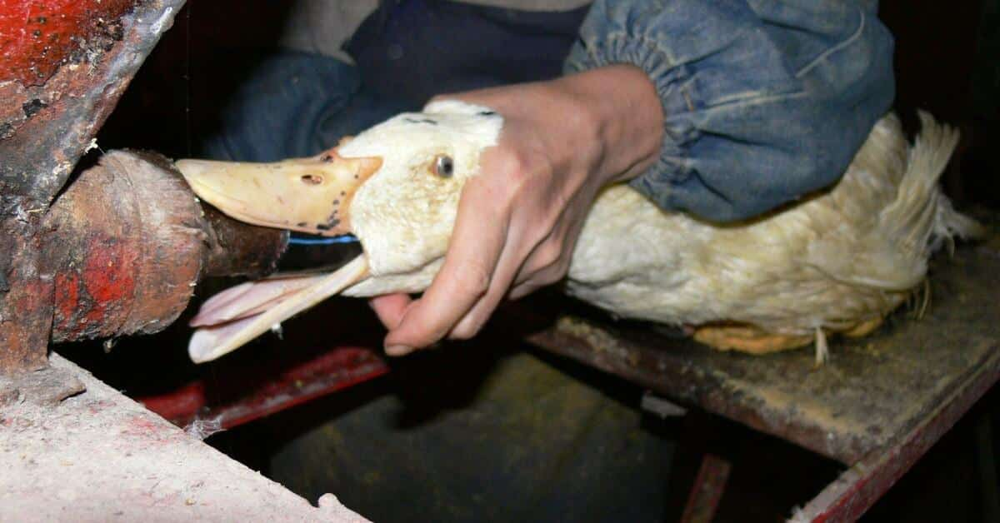
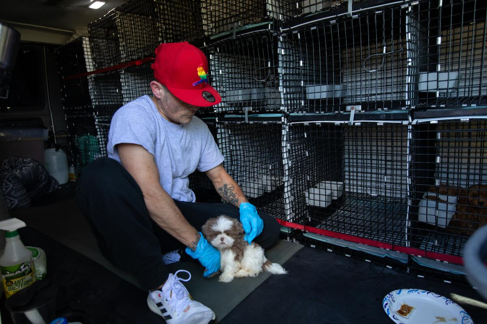
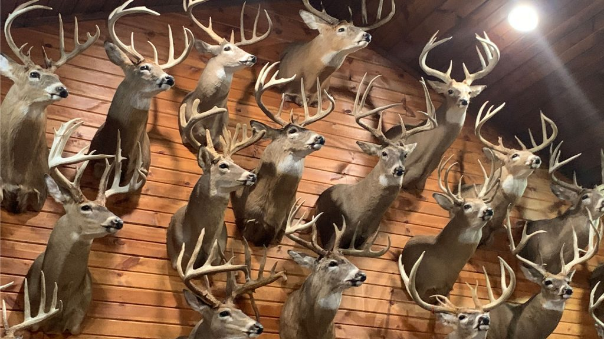

what if......






click the image to see what happens
Circus and zoo animals
In circuses and some zoos, animals are expected to entertain: lions jump through hoops, bears ride bicycles, elephants stand on small platforms or carry tourists on their backs. These performances are not natural behaviors; they’re created through repetitive training that can involve fear, punishment, and the constant threat of pain. When they are not on display, animals may spend long hours in cramped cages, chained spaces, or concrete enclosures with little mental stimulation. Elephants used for rides often carry heavy loads for years, which can damage their spine, feet, and joints, leading to chronic pain and early death. Even in “nice-looking” facilities, the lack of space, social structure, and freedom to roam can cause stress, depression, and stereotypic behaviors like pacing or self-harm. The animals become props in a show built to satisfy human curiosity and profit.
Experimental lab animals
In many laboratories, mice, rats, and other small animals are seen as tools for producing data, not as individuals with feelings and needs. They may be injected with chemicals, forced to inhale toxic substances, or have parts of their bodies altered to model human diseases. Even when ethical guidelines exist on paper, overcrowded cages, loud environments, and constant handling can create chronic stress and fear. Pain relief is not always adequate, and animals rarely have the chance to explore, play, or form natural social groups. Most will be killed at the end of an experiment, their lives reduced to a line in a research report. This system raises difficult questions about whose suffering is “acceptable” in the name of scientific progress.
Marine animals
Plastic bags, fishing nets, and other trash don’t just “float” in the ocean—they wrap around bodies, fins, necks, and shells. Turtles can mistake plastic bags for jellyfish and slowly die with their stomachs full of trash, unable to digest real food. Seals and dolphins get fishing lines tangled around their necks or flippers; as they grow, the line cuts deeper into their skin, leading to infection, bleeding, and intense pain. Even if they aren’t killed immediately, these injuries make it harder for them to swim, escape predators, find food, or surface for air. Human waste turns the ocean into a trap, where everyday objects become weapons against animals who never chose to live beside our garbage.
Farm animals
Many farm animals live in conditions designed to maximize output, not well-being. Chickens may be packed into cages so small they cannot spread their wings; pigs can be confined to crates where they can barely turn around. To produce “specialty” products like goose liver for foie gras, some animals are force-fed multiple times a day, causing their livers to swell painfully and their bodies to become unbalanced. Overcrowded barns and dirty floors increase the risk of disease, leading to routine use of antibiotics that also impact human health. In these systems, animals rarely see sunlight, touch grass, or engage in normal social and exploratory behaviors; their lives are reduced to a schedule of feeding, fattening, and slaughter. The demand for cheap meat and specific body parts turns living beings into units on a conveyor belt, where suffering is built into the design.
Pets and breeding
Behind the cute puppies and kittens in pet shops or online listings, there are often breeding facilities where animals are treated as production units. In these places, dogs, cats, and other animals may be kept in small, stacked cages, with metal bars instead of soft floors, and little protection from weather, noise, or filth. Mothers are bred repeatedly, even when their bodies are exhausted, and rarely get to stay with their offspring long enough to form stable bonds. Veterinary care may be minimal, and animals with genetic problems or illnesses might still be bred because they can generate profit. Lack of socialization in early life can lead to anxiety, fear, and behavioral issues later, long after the pet is sold. The visible “pet” that someone brings home is only the final image of a whole hidden system of neglect.
Wild animals
Many wild animals are killed because certain parts of their bodies—horns, ivory, antlers, skins—are considered valuable commodities. Elephants are shot or trapped so their tusks can be cut off; rhinos are slaughtered for horns that are ground into powder and falsely sold as medicine or status symbols. Deer, antelope, and other horned animals are targeted for trophies, turning their heads and antlers into decorations for human spaces. This hunting is often cruel and unregulated, leaving injured animals to suffer, orphaning young, and breaking up family groups. Beyond the individual deaths, removing key species from ecosystems disrupts predator–prey relationships, plant growth, and biodiversity. What begins as “just one horn” or “just one tusk” adds up to a global pattern of violence that empties forests and savannas.